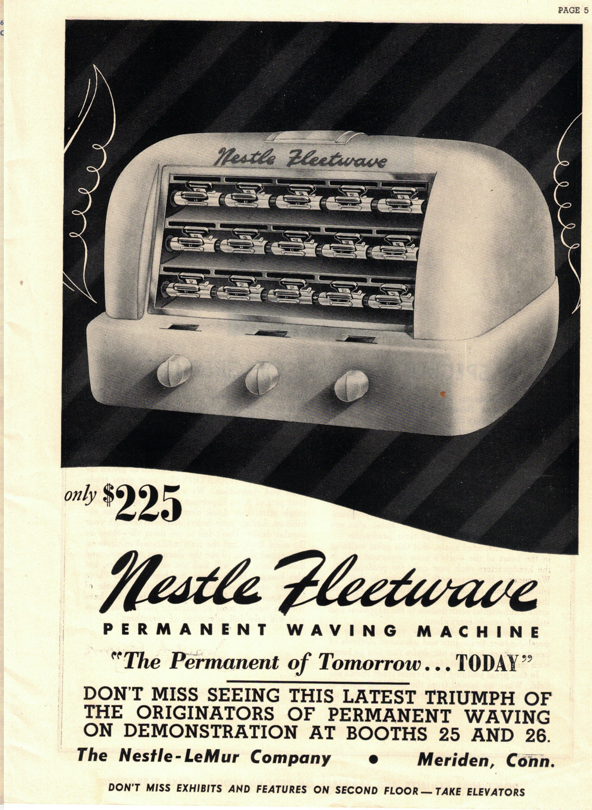

Explore technical material on permanent waving, from Nestlé–LeMur’s own product literature to a contemporary patent that shows how other inventors approached the same task.
Nestlé–LeMur machines and products



Read the source analysis of the Fleetwave advertisement or explore the industrial system behind permanent waving.
Comparative patent

Joyner’s design offers a contemporary comparison with Nestlé–LeMur’s commercial equipment. Read the full patent and drawings.